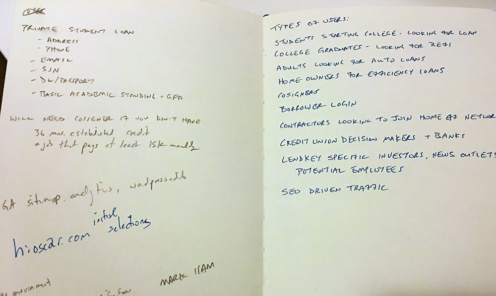

LendKey Network
LendKey has a network of 300+ credit unions and small, community banks that want to broaden their reach to online lending.
- UX Design
- Visual Design
- User Research
- ClientLendKey
- DateMarch 2015
The Project
Create an app like Kayak.com that allows borrowers to view all available lenders based on their credit profile. They should be able to sort and filter loan offers to select the best one for them. Further, to create a brand standard with consistent and common UI across all products.
Business Requirements
Collecting business requirements was a tedious task. What information did we need to get from the user? Could we issue a "soft pull" from the credit bureaus to pre-approve them? What is the "field of membership" for each partnering credit union?
The answers existed, but it took working with multiple departments to first understand the questions, then get them resolved.
Research
What information to ask from users, and when, are issues each of the competitors handle differently. I looked into how they presented rates, what the various calls to action were, and even the legal language they presented at specific steps.
In CommonBond's 'mobile-first' approach, they put a lot of emphasis on the types of loans they offer, but also use more friendly copy.

SoFi sets expectations about time with their headline, but they force users to enter their email and start an account! My requirements gathering showed that isn't necessary just to see rates.
Process
After generating personas I was eager to get my hands dirty and dug into paper prototypes. The LendKey Network is quite complex, with a lot of moving parts and necessary steps.
The agility of paper prototypes allowed me to easily test with internal users and iterate on the fly.
Sprint Planning
The paper prototypes matured into low-fidelity wireframes and it was time to begin working with Product Owners and Tech Leads to understand the compexity of the project and estimate epics.
I created a detailed process flow to walk through each step, aiding in the understanding of the product and its intracacies.
Thinking Mobile
Though the project's MVP was desktop only, as filtered by Optimizely, I wanted to ensure we weren't painting ourselves into a corner if and when they decided to expand the product's accessibility onto mobile and tablet.